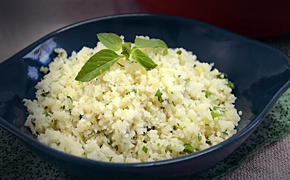
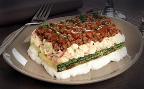

Bem-vindo ao nosso site, onde a saúde e o sabor andam de mãos dadas! Aqui, você encontrará uma variedade de pratos nutritivos e deliciosos para todos os gostos e necessidades alimentares.
Omelete de batata-doce
Tempo: 25min
Rendimento: 2 unidades
Dificuldade: ★☆☆ - Fácil
Ingredientes
4 ovos
1 xícara (chá) de batata-doce em cubos cozida
1/2 xícara (chá) de couve em fatias finas
1 tomate sem sementes picado
Sal e pimenta-do-reino a gosto
1 colher (sopa) de azeite
Modo de preparo
Em uma tigela, bata os ovos com um garfo até ficar homogêneo.
Junte a batata, a couve e o tomate. Tempere com sal e pimenta.
Em uma frigideira antiaderente média, aqueça o azeite em fogo médio e despeje os ovos.
Deixe cozinhar por 5 minutos de cada lado, em fogo baixo, ou até que não esteja mais cru. Sirva em seguida.

Arroz de couve-flor
Tempo: 20min
Rendimento: 4 porções
Dificuldade: ★☆☆ - Fácil
Ingredientes
1 maço de couve-flor
1 colher (sopa) de óleo de coco
1/2 cebola picada
2 dentes de alho picados
Sal e cheiro-verde picado a gosto
Modo de preparo
Corte o maço de couve-flor em floretes e coloque no liquidificador e deixe até ficar triturado.
Retire e reserve.
Aqueça uma frigideira com o óleo e frite a cebola e o alho por 2 minutos.
Adicione a couve flor, tempere com sal a gosto e cozinhe até ficar bem macio.
Misture com o cheiro-verde e sirva em seguida.

Lasanha fitness de abobrinha
Tempo: 1h20
Rendimento: 6 porções
Dificuldade: ★★☆ - Média
Ingredientes
5 abobrinhas fatiadas bem finas
Sal e pimenta-do-reino a gosto
1 fio de azeite
4 colheres (sopa) de azeite
300g de carne moída
2 dentes de alho esmagados
8 tomates bem maduros e picados
2 galhos de folhas de manjericão fresco
Sal e pimenta calabresa a gosto
400g de queijo tipo cottage
500g de peito de peru fatiado e em tiras
Modo de preparo
Tempere as abobrinhas com sal, pimenta e grelhe rapidamente em uma frigideira antiaderente com um fio de azeite. Reserve.
Para o molho de tomate, aqueça o azeite em uma panela e doure a carne.
Adicione o restante dos ingredientes e cozinhe em fogo médio por aproximadamente 10 minutos ou até formar um molho espesso. Desligue e reserve.
Para o recheio, misture o queijo cottage e o peito de peru. Reserve.
Para montar a lasanha, em um refratário médio, coloque um pouco do molho.
Espalhe muitas camadas de abobrinha, em seguida espalhe o recheio de queijo e peito de peru e finalize com o molho de tomate.
Repita o processo, até que acabem os ingredientes.
Leve ao forno médio, preaquecido, por 20 minutos. Retire e sirva em seguida.